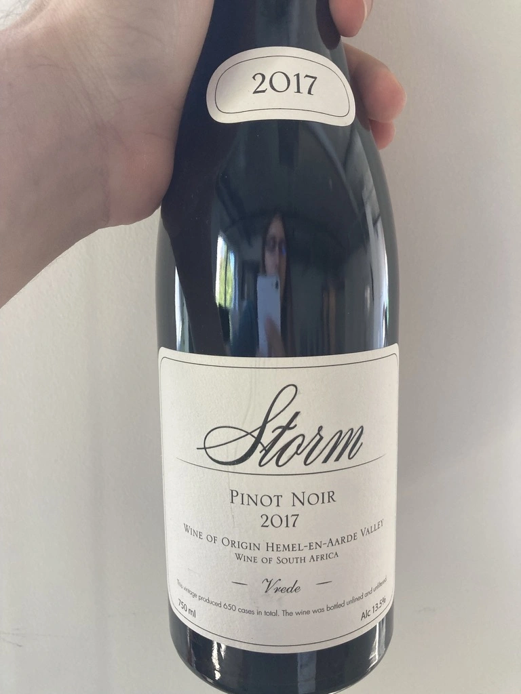

- Type
- Red Still, Dry
- Producer
- Storm
- Vintage
- 2017
- Location
- South Africa, WO Hemel-en-Aarde Valley
- Grapes
- Pinot Noir
- Alcohol
- 13.5
- Sugar
- 2.9
- Price
- 1320 UAH, 1390 UAH
- Cellar
- N/A
Vrede is one of the wards of WO Hemel-en-Aarde Valley, where Hannes Storm cultivates Pinot Noir and Chardonnay on northeast-facing slope. Vrede is low-vigor, stony, clay-rich Bokkeveld (Buck Veld) shale soil. In 2017 Hannes produced 650 cases of Vrede Pinot Noir that was aged for 11 months in Burgundy barrels, 28% being first use barrels.
Producer
Hannes Storm is a winemaker from South Africa dedicated to expressing terroirs of WO Hemel-en-Aarde Valley. After 12 vintages of working with Pinot Noir and Chardonnay, he discovered two tiny parcels of land with exceptional terroirs and planted them with Pinot Noir in 2008. His first vintage saw the light in 2012, and after 18 months in bottle, the wines were released in August 2014.
His approach - handcraft, small production, careful viticulture, minimal intervention in the cellar.
Now he works with 3 plots:
- Vrede Pinot Noir and Chardonnay - low-vigor, stony, clay-rich Bokkeveld (Buck Veld) shale soil in the Hemel-en-Aarde Valley.
- Ignis Pinot Noir - decomposed granite soil in the Upper Hemel-en-Aarde Valley.
- Ridge Pinot Noir, also from low-vigour, stony, clay-rich Bokkeveld shale soil in the Hemel-en-Aarde Ridge.
WO Hemel-en-Aarde Valley is divided into Valley, Upper Valley and Ridge. And it means that Hennes grows Pinot Noir in all 3 appellations of Hemel-en-Aarde Valley. And in fact, as of [2021-09-14 Tue], he is the only winemaker with this sort of achievement.
2019 was a culmination of three years of bone-dry soils. Although vines are drought-tolerant, this year, the stress reached a crescendo. Vines’ only purpose is to nurture their offspring - grapes and seeds. And when the vines are stressed, they focus so much energy on so few grapes. Consequently, 2019 is very small in production but very concentrated and potent. Vrede produced only 275 cases, Ignis - 290 cases, and Ridge - 340 (all about Pinot Noir).
Interestingly, before Hennes Storm started own project, he worked as a winemaker in Hamilton Russell Vineyards, another famous winemaker from South Africa.
Ratings
2021-09-14 - 9.00
Tasted as part of Na Uzbičči event.
Happy to taste this wine. Even if my excitement affects the score, it does so only by a tiny bit! Elegant and sexy bouquet: ripe strawberry, forest floor, mushrooms, red flowers and earthy notes. Perfectly balanced and simply delicious. Already at the right age to enjoy it. Value? Boy, it’s great.
2021-12-08 - 8.50
Tasted on an event organised by Vasyl Kalinichenko.
Tasted blind a set of 3 Pinot Noir wines. This one was also easy to guess because it was the most developed and combined traits of new and old worlds. Excellent ripe bouquet of jammy strawberry, forest floor, red flowers and mushrooms. Almost perfectly balanced, good acidity level, silky and simply delicious.